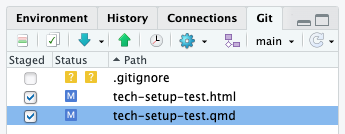

tech-setup-test
Testing your setup
Congratulations! If you are reading this in RStudio, you have successfully cloned a repository!
This document asks you to make and commit some small changes to make sure everything is working correctly.
1. Add your name
In the section at the very top of the page, you should see a block with lines for the document title and author. Next to author, replace my name with yours.
2. Render the document
In the menu bar, you should see a button that says Render. Click it. After a few seconds, an html document will be created in your project directory, and a browser window containing the text that is in this document should pop up.
Though html documents like this one are displayed in your browser, they are not actually on the internet. Look at the bar where the webpage url would usually be, and you’ll see a file path or something starting with “localhost”, not a webpage url. Just like other files on your computer, html files can be accessed whether or not you’re connected to wifi, and they’re only accessible to you (at least until you choose to upload them somewhere).
Rendering converts the text and code that you write in your qmd document to a nicer-looking, non-editable output format. It’s like when you write something up in Word and then save it as a pdf.
Html documents are only one of many output formats that Quarto can create. Qmd documents can also be used to make pdfs, word documents, slides, websites, and many other things. We will be sticking with html documents (the default) in this class, but see this page for other formats that might be useful to you in future.
3. Make your first commit
Now let’s commit the change in authorship and that new html file you just created. First, save your file as you normally would (File -> Save). This saves your changes to your computer.
“Committing” changes means saving them to Git. You should commit your changes frequently—as a rule of thumb, every time you finish a task, or reach some other natural stop point that you may want to roll back to later on.
In the upper right hand corner of RStudio, you should see a pane with several tabs. One of those tabs is labeled “Git.” Click this, and you should see a list of some or all the files in your project directory.

To commit changes, first you have to stage them. Changes to multiple files can be included in one commit. Check the boxes next to your .html and .qmd files—this tells Git that you want to include all changes you’ve made to these files in your commit.
Then, click the “Commit” button. This brings up a window in which you can see the changes you’ve made. Enter a short label or message describing your commit in the text box in the upper right hand corner, then click “Commit” again to finish the commit. Once everything is finished, you can close the popup window.
4. Push your changes to GitHub
Now you’ve successfully logged your changes with Git. But Git is just a program that lives on your computer. In order for your changes to show up on GitHub, where I can see and grade them, you need to “push” your local commits back up to the remote repository. Essentially, you’re uploading your changes to the internet version of the project.
In the menu bar of the Git pane, you should see a green up arrow. This is the push button, and when you click it, all of the commits you have made will be uploaded to your repository on GitHub.
Click the green arrow to push your commit.